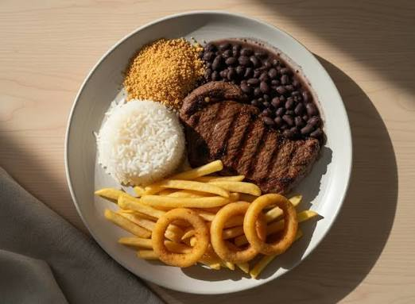
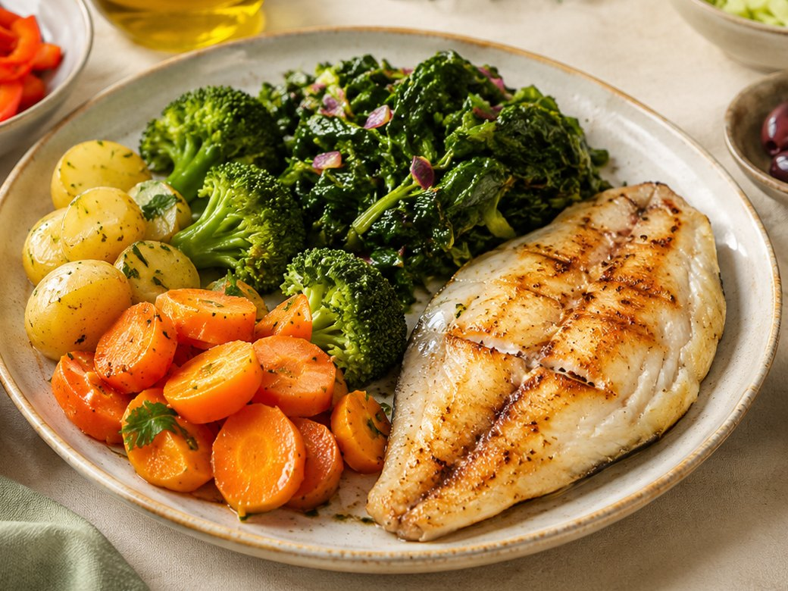
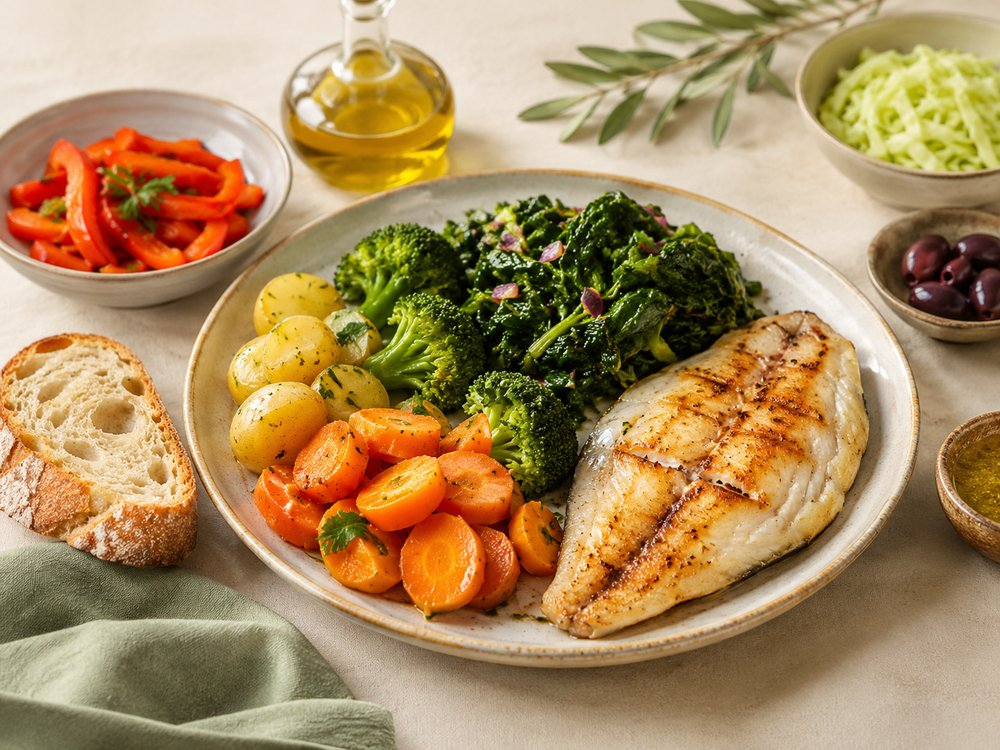
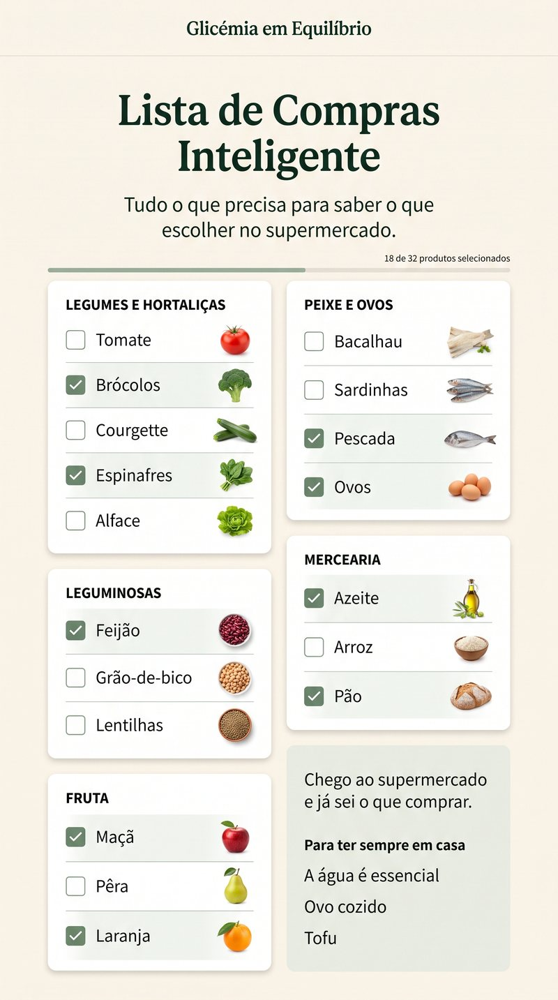
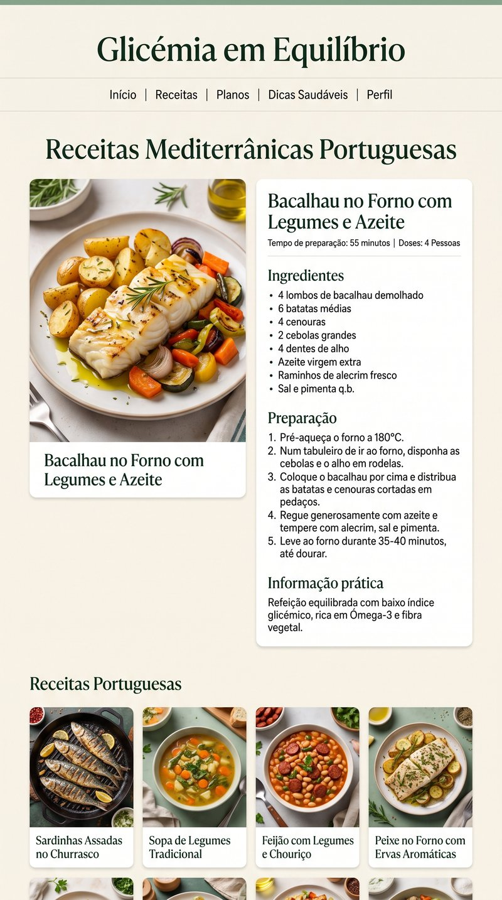
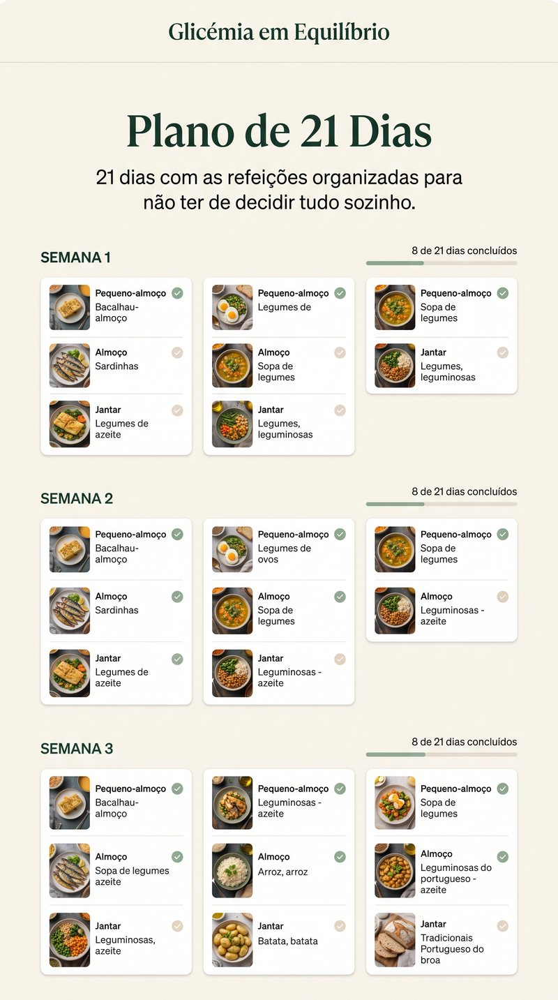
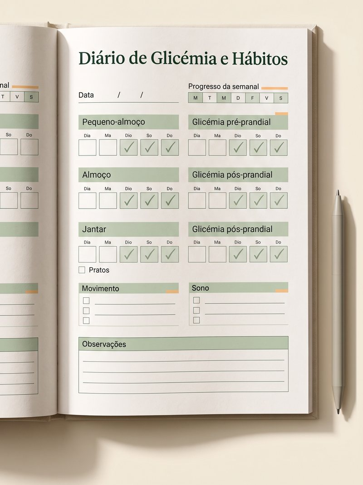
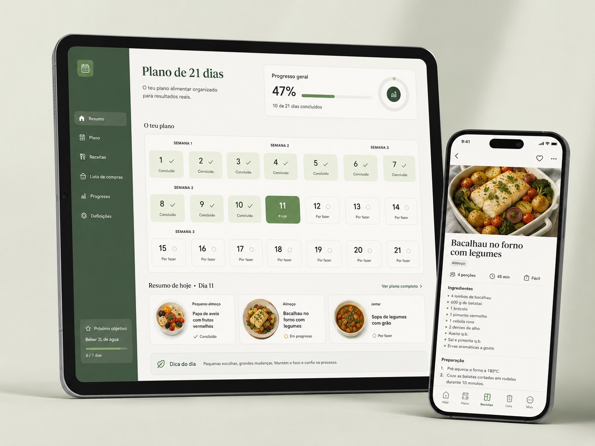

O Prato Empilhado

- Sopa de batata
- Pão à mesa
- Arroz e batata no mesmo prato
- Fruta ou um doce a seguir
Um método de alimentação assente na Dieta Mediterrânica, adaptado ao prato português do dia-a-dia — para quem quer cuidar da glicémia sem passar o resto da vida a comer à parte da família.
Sem dietas de fome. Sem abandonar a comida portuguesa. Sem viver a contar hidratos. Apenas um método simples para saber como comer melhor e cuidar da sua glicémia no dia a dia.
Porque é que cortar o pão não chega
Quando a glicémia sobe, a primeira reação é cortar tudo. Mas a realidade à mesa é outra.
Um almoço português tradicional junta facilmente sopa de batata, pão, arroz e massa na mesma refeição. O erro não é o que come, mas sim a forma como combina os alimentos.
Não precisa de passar fome. Precisa apenas de aprender a equilibrar o seu prato.
Repare na diferença:


Com o Prato Equilibrado, vai finalmente perceber o que pôr no prato sem stress e sem cortar o que gosta — por menos de metade do preço de uma única consulta de nutrição.
O que muda
Não precisa de deixar de comer aquilo de que gosta. Precisa de aprender a montar melhor o prato que já faz parte da sua vida.
Saiba o que colocar no prato.Aprenda a distinguir as escolhas que fazem mais sentido para o seu dia a dia, sem precisar de pesar alimentos ou andar a contar hidratos.
Descubra pequenas trocas que fazem diferença.Pão, arroz, batata e outros alimentos continuam à mesa. O método mostra-lhe o que pode trocar por uma alternativa melhor e quando essa troca realmente vale a pena.
Aprenda a juntar os alimentos da forma certa.Não é apenas o alimento isolado. É o conjunto da refeição. Aprenda a combinar legumes, proteína, hidratos e gordura para deixar de olhar para cada alimento como “permitido” ou “proibido”.
Do primeiro dia ao hábito
Finalmente percebe o que está a fazerComeça a olhar para a sua alimentação de outra forma e percebe onde pode fazer mudanças simples.
As primeiras trocas já fazem parte da rotinaComeça a aplicar o método nas refeições que já costuma fazer, sem precisar de mudar a sua vida inteira.
Já não precisa de pensar em cada escolhaAs novas formas de montar o prato já fazem parte da sua rotina.
Não é uma dieta para seguir durante algumas semanas. É aprender uma forma diferente de olhar para o prato.
Porque é que isto importa de verdade
Quando a alimentação deixa de ser uma fonte de preocupação, o dia também pode ficar mais leve. Com o método, aprende a fazer escolhas mais simples à mesa, sem transformar cada refeição num cálculo ou numa proibição.
O objetivo não é viver a pensar na glicémia. É aprender a organizar a alimentação para voltar a viver o dia sem estar constantemente preocupado com ela.
O contexto português
dos adultos portugueses tinha diabetes em 2024 — o valor mais alto alguma vez registado em Portugal.
Observatório Nacional da Diabetes / Sociedade Portuguesa de Diabetologia, “Diabetes: Factos e Números”.das pessoas entre os 20 e os 79 anos vive com diabetes ou com risco elevado de a desenvolver, somando a hiperglicemia intermédia — aquilo a que se chama pré-diabetes.
Observatório Nacional da Diabetes / Sociedade Portuguesa de Diabetologia, “Diabetes: Factos e Números”.é a fatia de portugueses que segue de facto o padrão alimentar mediterrânico, num país mediterrânico. Depois dos 65 anos, são 19%.
Direção-Geral da Saúde.Ou seja: a alimentação que o mundo inteiro copia de nós é aquela que deixámos de fazer.
Este método não lhe traz uma dieta estrangeira. Traz de volta a nossa — adaptada a quem precisa de olhar para a glicémia.
O que vai receber
Não vai receber mais uma lista de proibições para guardar na gaveta. Vai receber um método simples — escolher, trocar, combinar — e tudo o que precisa para o pôr em prática à mesa.
O método

Pare de olhar para o pão, o arroz e a batata como alimentos proibidos. Aprenda a montar o prato português de outra forma: que trocas fazem sentido, o que pôr ao lado e por que ordem comer. Não precisa de comer outra coisa — precisa de organizar melhor o que já come.
Essencial + CompletoRecebeu uma análise alterada e ficou sem saber o que aqueles números querem dizer? Compreenda a glicémia em jejum e a hemoglobina glicada em linguagem simples.
Essencial + CompletoSem ginásio, sem máquinas, sem horas livres. Pequenos movimentos para a vida real — sobretudo a seguir às refeições, que é quando mais conta.
Essencial + CompletoE, no plano Completo, o método vira rotina

Chega ao supermercado sem saber o que escolher? Lista organizada por secções, adaptada ao Continente, Pingo Doce e Lidl.
Completo
Saber o que comer é uma coisa; saber o que cozinhar amanhã é outra. Receitas com bacalhau, sardinha, sopa, leguminosas e azeite — sem ingredientes estranhos.
Completo
Não quer passar 21 dias a perguntar “e agora, o que como?” Ementas prontas para as três primeiras semanas, para não decidir tudo sozinho.
Completo
Para não confiar só na memória na próxima consulta. Registe os seus valores e hábitos e leve-os ao seu médico.
Bónus exclusivoO método ensina-lhe o que fazer. O Plano Completo dá-lhe as ferramentas para não descobrir tudo sozinho.
Sabe o que escolher, o que trocar e como combinar — e ainda recebe as compras, as receitas e as ementas para começar desde o primeiro dia.
É a diferença entre saber o que devia fazer e ter tudo pronto para começar.

Escolha a opção que faz sentido para si
Essencial
7,90€
Pagamento único
Completo
14,90€
Pagamento único
O que recebe hoje
Pode pagar como já está habituado
Pagamento processado pela Hotmart. Não guardamos os dados do seu cartão.
Tem 15 dias para ler tudo, experimentar as trocas e perceber se isto encaixa na sua vida.
Se concluir que não é para si, escreve-nos e devolvemos a totalidade do valor pago. Sem perguntas e sem burocracia.
O risco é nosso. A decisão é sua.
Perguntas frequentes
Não. O método existe precisamente porque a maioria das pessoas não consegue manter uma alimentação construída sobre proibições. O trabalho é feito na escolha, na troca e na combinação.
Não. Não há balanças, folhas de cálculo nem contagens.
Fale primeiro com o seu médico. Este conteúdo tem fins educativos e informativos e não substitui aconselhamento, diagnóstico ou tratamento médico. Nunca altere nem interrompa medicação por causa daquilo que aqui lê.
Imediatamente após a confirmação do pagamento, por email.
Se quer sobretudo perceber o que fazer, o Essencial chega. Se sabe que a sua dificuldade é a execução do dia-a-dia, escolha o Completo — as ementas e as receitas são exactamente essa parte.
Pode continuar a cortar alimentos um a um e a esperar pela próxima análise para saber se resultou.
Ou pode aprender, de uma vez, a montar o prato português de forma a que o pão, o arroz e a batata deixem de ser uma preocupação diária.
Não é proibição. É saber escolher, trocar e combinar.
14,90€ · pagamento único · acesso imediato · garantia de 15 dias